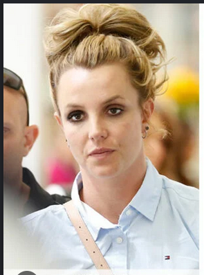

A Decade-Long Investigation · What They Don't Want You To Know

Between 2007 and 2008, the Britney Spears we knew… changed.
Tonight: The Evidence They Buried.
Court grants father control of star's affairs; duration indefinite. Sources cite "medical concerns."
Fans question sudden public absence. Team issues no statement. Insiders "tight-lipped."
Superior Court orders filings kept from public inspection.
ALLEGEDLY FILED, 2009. · ALLEGEDLY SEALED. · ALLEGEDLY.
britneyspears …the way the paps shoot me in public, I look like a different person 🌹🌹🌹 is it me??? who knows anymore 😅
A different person. Her words.
DENTAL STRUCTURE IS FORENSICALLY UNIQUE. · HERS CHANGED.
diastema doesn't come back.
…but for real for real.
The toxicity of Hollywood toward women and femmes in the music industry has always been there — but has become more clear in recent years.
The conservatorship. Decades of ridicule and manipulation. Medical and relational trauma.
These things have absolutely affected her mental health.
Center her story. Center her experience.
Our real critiques belong to the institutions of power and dominance that take advantage of young artists and children.
Not to her.